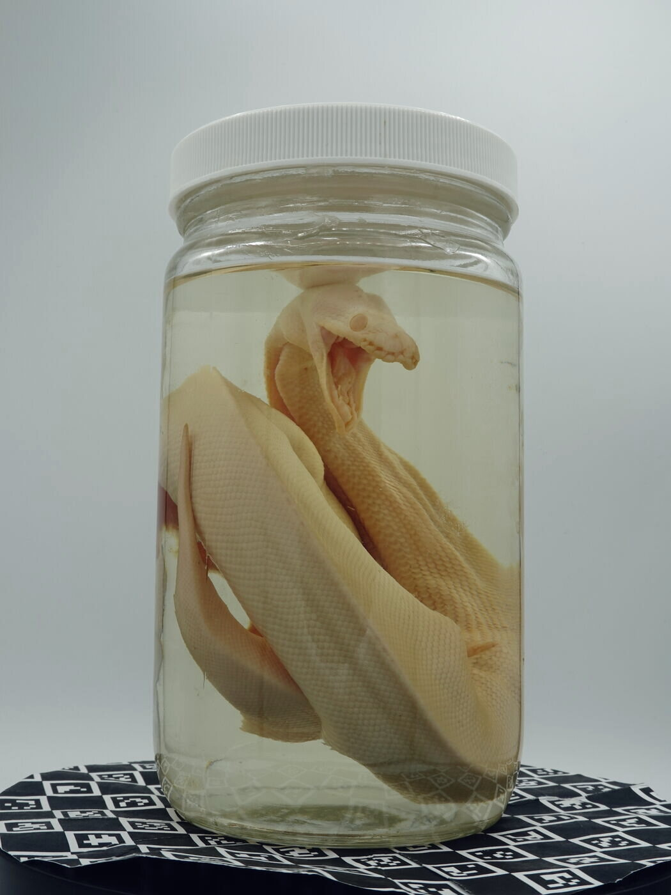
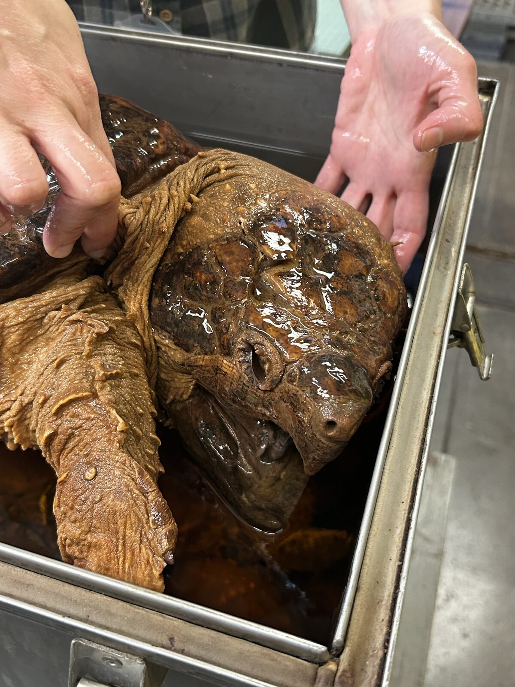
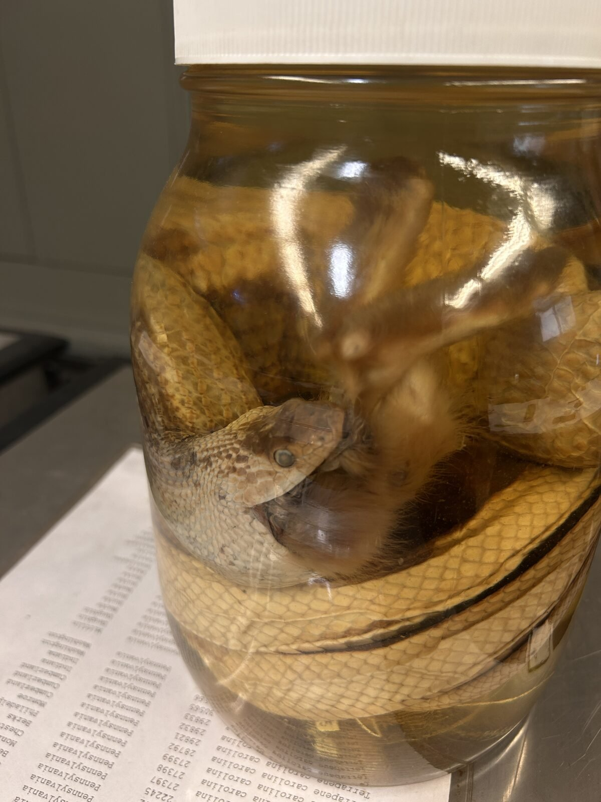
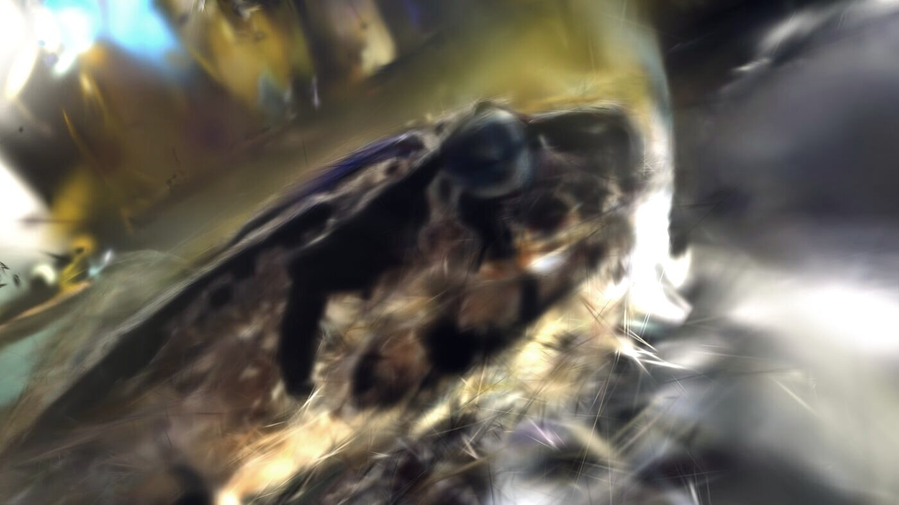
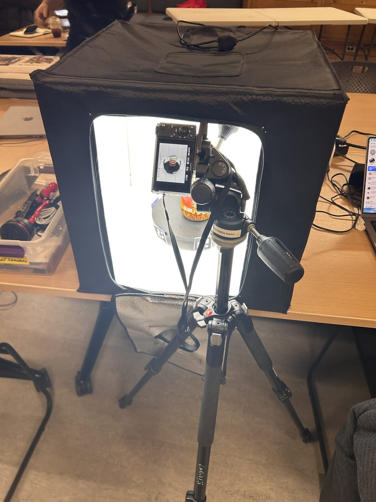
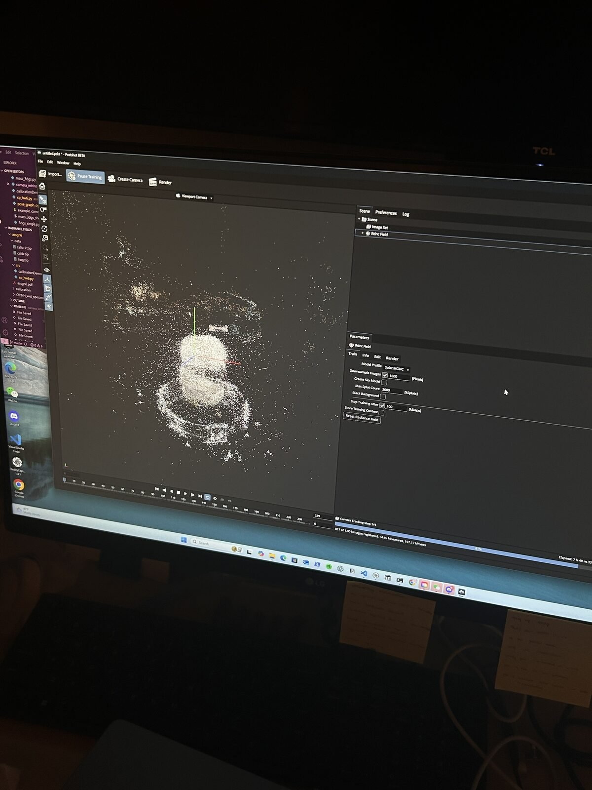
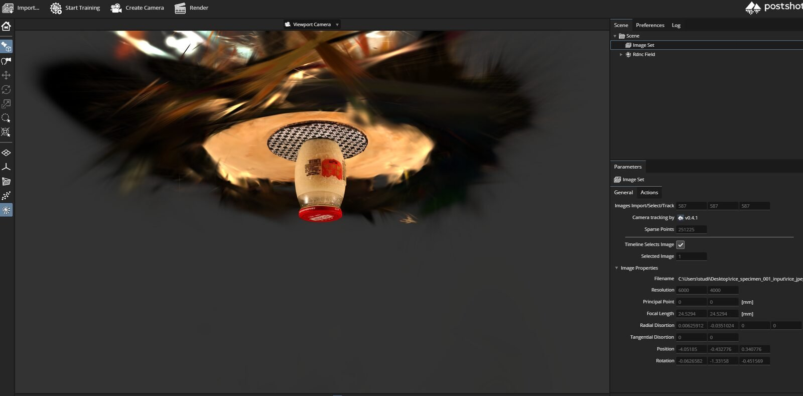
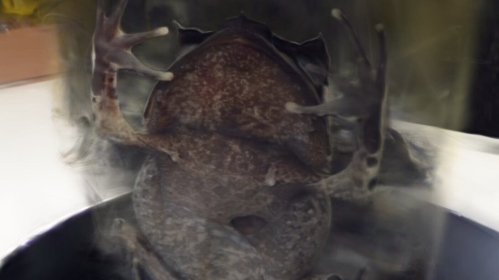

dead things in jars
Wet specimens captured in 3D, glass and all.

Natural history museums keep a second collection most visitors never see: animals preserved in fluid, coiled in jars of ethanol, sitting on shelves for decades. Wet specimens are strange to look at. You see the body through glass and liquid, warped by the curve of the jar and lit by reflections that move as you move. They only really make sense up close.
Most of the specimens here come from the Center for PostNatural History in Pittsburgh, a museum of living things that people have altered on purpose. I also had access to the collections of the Carnegie Museum of Natural History.


Why the usual scan fails
Digitizing a collection usually means photogrammetry: photograph the object from every side, then let software match points between the photos and build a surface. Glass and liquid break that. Every reflection moves with the camera, so the software sees surfaces that aren’t there and loses the ones that are. The qualities that make a wet specimen worth looking at are exactly the ones the scan throws away as noise.
Keeping the glass

Gaussian splatting describes a scene as many small, soft blobs of color, each a little transparent, each able to look different from different angles. That makes it unusually good at shiny, see-through, complicated things. In a splat, the reflections on the jar survive, and the jar stays part of the object.
I photographed more than twenty specimens in a light box with Polycam, then trained the splats through a commercial pipeline (Postshot) and an open-source one (nerfstudio, COLMAP), to see what each kept and what each lost.


Two kinds of fragility
Working on this, I kept noticing that the specimens and the splats are fragile in the same way. A wet specimen lasts only as long as its fluid and its seal. A splat holds together only from the angles it was photographed from: step outside those views and it dissolves into floaters and smears.
I stopped treating those glitches as failures to hide. They show exactly where the record runs out.


The images were never the hardest part. Capture coverage, processing choices, file size and getting a scan into a browser still take too much specialist knowledge. The goal is a workflow simple enough to hand to collection stewards who don’t want to think about Gaussians, and, eventually, a virtual museum of wet specimens that anyone can walk through.
Read the longer write-up on Substack ↗